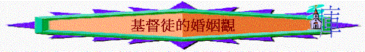

引言：你有沒有去過基督徒的婚禮？你最留心在婚禮中那個程序？你又認為信徒結婚有什麼意義？
1.婚姻目的
A.獨居不好（創2:18）
～神為何給亞當預備配偶？
何謂「獨居」？ 一個人有什麼不好的地方？
B.配搭幫助（創2:18-20）
～「配偶」這字有什麼意思？
～你認為男與女有什麼不同地方？ 彼此又可以有怎樣的配搭？
～若你日後真的結婚了，你認為自己可以作什麼成為你的另一半之幫助？
C.完成使命（創1:28）
～神要亞當及夏娃兩人共同作什麼？
～何謂「治理這地」？
～你又認為今天信徒結婚在一起，有什麼共同的使命？
2.聖經原則
A.在選擇配偶上───是主內的（林後6:14）
～何謂「同負一軛」？你認為夫婦二人是否「同負一軛」？
～基督徒應否選未信之人為配偶？
～若一信徒說：「他／她雖是未信，但不緊要，我暫時與他／她拍拖先，遲些帶他／她信主就可以」，你同意他看法嗎？ 為什麼？
B.在性關係上───婚前不能有性行為（出
22:16）
～聖經用什麼字眼表達「與未有迎娶的人發生關係」之行為？ 從這字眼的表達中，我們看到神是否認同人有婚前性行為？
～你又認為人若認同婚前可有性行為，有什麼好／不好的結果？
C.在婚姻盟約上───不可分開（太19:4-6）
～聖經形容人結婚後，成為什麼？
～何謂一體？ 可否分開？ 為什麼？
～你若參與過婚禮，通常雙方會讀一段誓詞，有沒有留意當中的內容是什麼？
～若有人說：「我與他／她性格不合，所以我要與他／她離婚！」你怎看？
～太19:9說明夫妻在什麼情況下，才可分開？
3.我適合現在結婚嗎?
～你認為信徒何時適合結婚？
～在什麼情況下又不適合結婚？
～試參考下面【C I D】的原則資料：
C---Commitmentà我願委身於對方？
「因此，人要離開父母，與妻子連合，二人成為一體。」創
2:24
～神設立婚姻的原意是要人與妻子連合，二人成為一體，人若仍沒有委身於對方的心，不願與對方成為一體，讓對方成為自己生命不可分隔、不可分開的一部份，似乎仍未適合進入婚姻中。
I---Independenceà我是否能獨立起來？
～人要離開父母表示人與離開以往原身的家庭，不再倚賴父母，要自己起來，建立一個屬於自己與配偶的家庭，但人若有太多的倚賴父母，不能獨立，似乎仍未適合進入婚姻中。
D---Dependenceà我是否願接受/倚靠我的配偶幫助？
「耶和華
神說：「那人獨居不好，我要為他造一個配偶幫助他。」」創
2:18
～神期望的婚姻是要配偶幫助另一方，但另一方若太獨立暫時未能接受另一半的幫助，似乎仍未適合進入婚姻中。
～當然以上是參考的，每一對戀人也有不同的情況，有一些可能結婚後，靠著主的恩，雙方的努力，改變了不願委身及太依附父母及不願接受幫助的想法的。
～若你今天遇到一位你所愛（她也愛你）的人，她與你年齡也相若，若用【C I D】的原則，你認自己適合結婚嗎？為什麼？